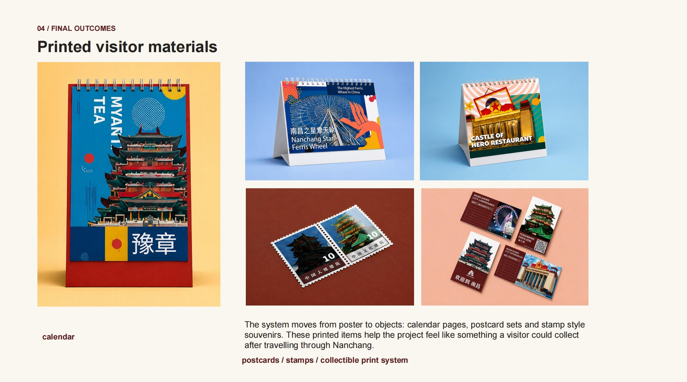

Portfolio 2026 / Creative Practice
Junchao Zhu
Creative Portfolio
Visual Communication · Creative Production · 3D / Motion / Unreal Engine
A developing portfolio exploring visual design, brand identity, production workflow and screen-based visual work.
Selected Work
Creative Directions

Brand / Visual Identity
Logo systems, city symbols, cultural storytelling and visual identity applications across print and digital formats.
- Nanchang City Symbols
- Landmark icon development
- Tourism communication
- Brand consistency across formats
Graphic / Visual Design
Poster design, layout systems, visual hierarchy, typography and print-based communication outcomes.
- Poster and layout design
- Editorial composition
- Print outcomes
- Typography and hierarchy
Creative Production / Process
Research development, asset organisation, process documentation, mockup preparation and production workflow support.
- Research and development process
- Photoshop / mockup workflow
- Asset organisation
- Feedback implementation and documentation

3D / Motion / VFX
Unreal Engine, cinematic composition, 3D rendering, motion experiments and VFX-focused visual development.
Specialist Portfolio →
Featured Project
Nanchang City Symbols
Visual Communication Graduation Project
A visual communication project exploring how simplified city symbols can introduce Nanchang to international audiences through postcards, stamps, posters, stickers, calendars and print-based visual storytelling.
View Case StudyAbout / Creative Profile
Visual communication with production thinking.
I am a recent Visual Communication graduate from the University for the Creative Arts, developing my practice across brand identity, graphic design, creative production, 3D, motion and Unreal Engine-related workflows. My work combines visual storytelling, research, layout systems and production process documentation.
Currently exploring: visual identity systems, production workflow, Unreal Engine, motion design and VFX-related visual development.